측량및지형공간정보산업기사 (2012-03-04 기출문제)
1과목: 응용측량
1. 그림과 같은 경사터널에서 A, B 두 측점간의 고저차는? (단, A 측점의 기계고 IH=1m, B 측점의 HP = 1.5m, AB간의 시거리 S = 20m, 경사각 θ= 30°)
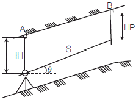
- 5.5m
- 7.5m
- 10.5m
- 12.5m
(정답률: 79%)

2. 자동차가 곡선부를 통과할 때 원심력의 작용을 받아 점선방향으로 이탈하려고 하므로 이것을 방지하기 위하여 노면에 높이차를 두는 것을 무엇이라 하는가?
- 확폭(slack)
- 편경사(cant)
- 완화구간
- 시거
(정답률: 95%)
3. 하천이나 항만 등에서 심천측량을 한 결과에 따라 수심을 표시하는 방법으로 가장 적합한 것은?
- 점고법
- 지모법
- 등고선법
- 음영법
(정답률: 80%)
4. 노선측량의 순서로 가장 접합한 것은?
- 노선선정→ 지형측량→ 중심선측량→ 종ㆍ횡단측량→ 용지측량→ 공사측량
- 노선선정→ 중심선측량→ 종ㆍ횡단측량→ 용지측량→ 공사측량→ 지형측량
- 노선선정→ 공사측량→ 중심선측량→ 종ㆍ횡단측량→ 용지측량→ 지형측량
- 노선선정→ 지형측량→ 중심선측량→ 종ㆍ횡단측량→ 공사측량→ 용지측량
(정답률: 86%)
5. 터널 내에서 차량 등에 의하여 파손되지 않도록 콘크리트 등을 이용하여 만든 기준점을 무엇이라 하는가?
- 도벨 (dowel)
- 레벨 (level)
- 자이로 (gyro)
- 도갱 (pilot tunnel)
(정답률: 96%)
6. 경관예측시 시설물을 보는 각도에 대한 설명으로 옳지 않은 것은?
- 10°≤ 수평시각≤30°에서 시설물의 전체형상을 인식할 수 있고 경관의 주제로서 적당하다.
- 수평시각이 60°보다 크면 시설물에 대한 압박감을 느끼기 시작한다.
- 0°≤ 수직시각 ≤15°에서 시설물이 경관의 주제가 되고 쾌적한 경관으로 인식된다.
- 시계에서 차지하는 비율이 커져 압박감을 느끼기 시작하는 수직시각은 50°보다 클 경우이다.
(정답률: 90%)
7. 면적측량을 실시 할 때, 거리관측 정확도를 1/m로 관측하였다면 면적의 정확도는?
- √1/m
- 1/m
- 2/m
- 1/m2
(정답률: 77%)
8. 그림과 같은 사각형 ABCD의 면적은?
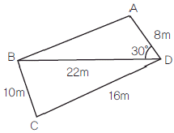
- 95.2m2
- 1⑤.2m2
- 111.2m2
- 117.3m2
(정답률: 82%)
9. 그림과 같은 하천단면에 평균유속 2.0m/sec로 물이 흐를 때 유량(m3/sec)은?
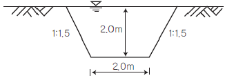
- 10m3/sec
- 20m3/sec
- 30m3/sec
- 40m3/sec
(정답률: 69%)
10. 상향기울기 25/1000, 하향기울기 -50/1000일 때 곡선반지름이 1000m이면 원곡선에 의한 종곡선장은?
- 85m
- 75m
- 65m
- 55m
(정답률: 65%)
11. 터널측량에서 터널 내 고저측량에 대한 설명으로 옳지 않은 것은?
- 터널의 굴삭이 진행됨에 따라 터널 입구 부근에 이미 설치된 고저 기준점(B.M)으로부터 터널 내의 B.M에 연결하여 터널 내의 고저를 관측한다.
- 터널 내의 B.M은 터널 내 작업에 의하여 파손되지 않는 곳에 설치가 쉽고, 측량이 편리한 장소를 선택한다.
- 터널 내의 고저측량에는 터널 외와 달리 레벨을 사용하지 않는다.
- 터널 내의 표척은 작업에 지장이 없도록 알맞은 길이를 사용하고 조명을 할 수 있도록 해야 한다.
(정답률: 88%)
12. 그림과 같이 두 직선의 교점에 장애물이 있어 C, D 측점에서 방향각 (α)을 관측하였다. 교각(l)은? (단, αCA= 228°30´, αCD = 82° 00´, αCB = 136°30´)
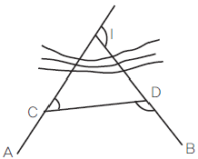
- 54° 30´
- 88° 00´
- 92° 00´
- 146° 30´
(정답률: 27%)
13. 그림과 같이 계곡에 댐을 만들어 저수하고자 한다. 댐의 저수위를 170m로 할 때의 저수량은 약 얼마인가? (단, 등고선 간격은 10m이고 각 등고선으로 둘러싸인 면적은 130m→460m2, 140m→580m2, 150m→740m2, 160m→920m2, 170m→1240m2 바닥은 편평한 것으로 가정한다.)
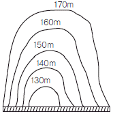
- 20,600m3
- 25,500m3
- 30,600m3
- 35,500m3
(정답률: 78%)
14. 3개의 꼭지점 좌표가 아래와 같은 삼각형의 면적은 얼마인가?
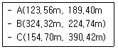
- 19,628.1m2
- 19,638.1m2
- 19,648.1m2
- 19,658.1m2
(정답률: 27%)
15. 노선의 설계에 앞서서 행하는 조사측량작업의 방법으로 가장 효과적인 것은?
- 사진측량
- 평판측량
- 기준점측량
- 시거측량
(정답률: 40%)
16. 지하에 매설되어 있는 금속관로 또는 비금속 관로의 탐지기 평면 위치에 대한 정밀도 성능기준(허용탐사오차)은?
- ±10㎜
- ±20㎝
- ±50㎝
- ±1m
(정답률: 84%)
17. 하천측량에서 심천측량과 가장 관계가 깊은 것은?
- 횡단측량
- 기준점측량
- 평면측량
- 유속측량
(정답률: 71%)
18. 축척 1: 1200 지도상의 면적을 측정할 때, 이 축척을 1: 600으로 잘못 알고 측정하였더니 10,000m2가 나왔다면 실제면적은?
- 40,000m2
- 20,000m2
- 10,000m2
- 2500m2
(정답률: 74%)
19. 평균유속을 결정하는 방법 중, 2점법의 관측수심은 수면으로부터 어느 위치인가? (단, h : 수심)
- 0.2h, 0.6h
- 0.4h, 0.6h
- 0.2h, 0.8h
- 0.4h, 0.8h
(정답률: 95%)
20. 완화곡선에 대한 설명으로 옳지 않은 것은?
- 모든 클로소이드는 닮은 꼴이며 클로소이드 요소는 길이의 단위를 가진 것과 단위가 없는 것이 있다.
- 클로소이드의 형식은 S형, 복합형, 기본형 등이 있다.
- 완화곡선의 반지름은 시점에서 무한대, 종점에서 원곡선의 반지름으로 된다.
- 완화곡선의 점선은 시점에서 원호에, 종점에서 직선에 접한다.
(정답률: 87%)
2과목: 사진측량 및 원격탐사
21. 사진측량의 결과분석을 위한 현지점검에 관한 설명으로 옳지 않은 것은?
- 항공사진측량으로 제작된 지도의 정확도를 검사하기 위한 측량은 충분한 편의(偏椅)가 발생하도록 지도의 일부분에만 실시한다.
- 현지측량은 지도에 나타난 면적에 산재해 있는 충분히 많은 검사점들을 포함해야 한다.
- 현장에서 조사된 항목은 되도록 조건에 모두 만족하는 것을 원칙으로 한다.
- 그림자가 많고, 표면의 빛의 반사로 인해 영상의 명암이 제한된 지역의 경우는 편집과정에서 오차가 생기기 쉬우므로, 오차가 의심되는 지역을 조사한다.
(정답률: 89%)
22. 사진판독의 기본요소와 거리가 먼 것은?
- 심도
- 형상
- 음영
- 색조
(정답률: 70%)
23. 다음의 조건을 가진 사진들 중에서 입체시가 가능한 것은?
- 50% 이상 중복 촬영된 사진 2매
- 광각 사진기에 의하여 촬영된 사진 1매
- 한 지점에서 반복 촬영된 사진 2매
- 대상 지역 파노라마 사진 1매
(정답률: 86%)
24. 야간이나 구름이 많이 낀 기상조건에서 취득이 가장 용이한 영상은?
- 항공 영상
- 레이더 영상
- 다중파장 영상
- 고해상도 위성 영상
(정답률: 90%)
25. 사진측량의 특징에 대한 설명으로 옳지 않은 것은?
- 초기 시설 비용이 많이 필요하다.
- 대상물이 움직이는 경우에는 적용하기 곤란하다.
- 사진 상에 나타나 있지 않는 대상물의 해석이 불가능하다.
- 구름, 바람, 조도, 적설 등에 영향을 받는다.
(정답률: 54%)
26. 항공삼각측량 중 사진을 기본단위를 사용하여 사진좌표와 지상좌표를 공선조건식을 이용하여 표정하는 방법으로 가장 정확한 성과물을 얻을 수 있는 방법은?
- 스트립 조정법
- 독립 모델법
- 번들 조정법
- 도해사선법
(정답률: 69%)
27. 위성영상의 처리단계는 전처리와 후처리로 분류된다. 다음 중 전처리에 해당되는 것은?
- 영상분류
- 기하보정
- 수치표고모델 생성
- 3차원 시각화
(정답률: 88%)
28. 해석적 표정에 있어서 관측된 상좌표로부터 사진좌표로 변환하는 작업은?
- 상호표정
- 내부표정
- 절대표정
- 접합표정
(정답률: 67%)
29. 항공사진 축척이 1:25,000이고, 등고선 계수(C=Factor)가 525, 초점거리가 21㎝일 때, 최소 등고선 간격은?
- 10m
- 7.5m
- 5m
- 2.5m
(정답률: 62%)
30. 사진지도 중에서 사진기의 경사를 수정하고 축척도 조정한 것은? (단, 등고선은 삽입되지 않음)
- 정사투영 사진지도
- 약집성 사진지도
- 반조정집성 사진지도
- 조정집성 사진지도
(정답률: 62%)
31. 편위수정의 조건이 아닌 것은?
- 샤임 플러그 조건
- 광학적조건
- 로세다 조건
- 기하학적 조건
(정답률: 75%)
32. 카메라의 초점거리가 150㎜ 이고, 사진크기가 18㎝ × 18㎝인 연직사진 측량을 하였을 160m때 기선고도비는? (단, 종중복 60%, 사진축척은 1:20,000이다.)
- 0.18
- 0.28
- 0.38
- 0.48
(정답률: 50%)
33. 다음 중 한 장의 사진으로 할 수 있는 작업은?
- 대상들의 정확한 3차원 좌표
- 사진판독
- 수치표고모델(DEM) 생성
- 수치지도 작성
(정답률: 76%)
34. 축척 1:20,000의 엄밀 수직사진에서 지상사진주점으로부터 500m 떨어진 곳에 있는 50m 높이의 철탑의 사진상 기복변위량은? (단, 사진은 광학사진으로 초점거리는 150㎜이다.)
- 2.21㎜
- 0.42㎜
- 0.84㎜
- 1.68㎜
(정답률: 40%)
35. 대공표지(Air Target, Signal Point)에 대한 설명으로 옳은 것은?
- 사진상에 명확히 나타나고 정확히 측량할 수 있는 자연물로 이루어진 접합점
- 스트립을 인접스트립에 연결시켜 블록을 형성하기 위해 사용되는 점
- 항공사진에 표정용 기준점의 위치를 정확하게 표시하기 위해 촬영 전 지상에 설치하는 것
- 사진상의 주점이나 표정점 등 제점의 위치를 인접한 사진상에 옮기는 것
(정답률: 83%)
36. 전정색영상의 공간해상도가 1m, 밴드수가 1개이고, 다중분광영상의 공간해상도가 4m, 밴드수가 4개라고 할 때, 전정색영상과 다중분광영상의 해상도 비교에 대한 설명으로 옳은 것은?
- 전정색영상이 다중분광영상보다 공간 해상도가 높고 분광해상도가 높다.
- 전정색영상이 다중분광영상보다 공간해상도가 높고 분광해상도는 낮다.
- 전정색영상이 다중분광영상보다 공간해상도가 낮고 분광해상도도 낮다.
- 전정색영상이 다중분광영상보다 공간해상도가 낮고 분광해상도는 높다.
(정답률: 59%)
37. 초점거리 155㎜의 카메라로 해면고도 3000m의 비행기로부터 평균해발 500m의 평지를 촬영할 때의 사진축척은 약 얼마인가?
- 1/15,000
- 1/16,000
- 1/17,000
- 1/20,000
(정답률: 56%)
38. 원격탐사를 위한 위성과 관계없는 것은?
- LANDSAT
- GPS
- SPOT
- IKONOS
(정답률: 53%)
39. 항공사진의 특수 3점이 아닌 것은?
- 주점
- 연직점
- 등각점
- 수평점
(정답률: 79%)
40. SAR(Synthetic Aper ture Radar)의 왜곡 중에서 레이더 방향으로 기울어진 면이 영상에 짧게 나타나게 되는 왜곡현상은?
- 음영(shadow)
- 전도(layover)
- 단축(foreshortening)
- 스페클(speckle noise)
(정답률: 88%)
3과목: GIS 및 GPS
41. GIS사업을 수행하기 위하여 공간정보데이터베이스를 구축할 경우 보기의 작업을 일반적인 순서로 바르게 나열한 것은?
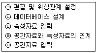
- ㉡-㉤-㉠-㉢-㉣
- ㉤-㉠-㉢-㉣-㉡
- ㉡-㉣-㉤-㉠-㉢
- ㉡-㉤-㉢-㉣-㉠
(정답률: 30%)
42. 아래와 같은 데이터를 등간격(equal interval) 방법을 이용하여 4개의 그룹으로 classify한 결과로 옳은 것은?
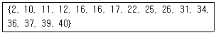
- {2, 10}, {11, 12, 16, 16, 17}, {22, 25, 26}, {31, 34, 36, 37, 39, 40}
- {2, 10}, {11, 12}, {16, 16}, {17, 22, 25, 26, 31, 34, 36, 37, 39, 40}
- {2, 10, 11, 12}, {16, 16, 17, 22}, {25, 26, 31, 34}, {36, 37, 39, 40}
- {2, 10}, {11, 12, 16}, {16, 17, 22, 25}, {26, 31, 34, 36, 37, 39, 40}
(정답률: 60%)
43. 아래의 래스터 데이터에 최대값 윈도우(Max kernel)를 3×3 크기로 적용한 결과로 옳은 것은?
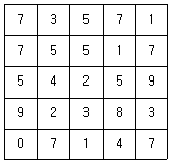
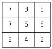
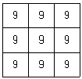
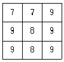
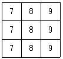
(정답률: 81%)
44. 공간 데이터의 메타데이터에 포함되는 주요 정보가 아닌 것은?
- 공간 창조정보
- 데이터 품질정보
- 배포정보
- 가격정보
(정답률: 73%)
45. 다음 파일 포맷 중 성격이 다른 하나는?
- BSQ
- SHP
- JEPG
- GeoTIFF
(정답률: 72%)
46. 위상정보에 대한 설명으로 옳은 것은?
- 공간상에 존재하는 공간객체의 길이, 면적, 연결성, 계급성 등을 의미한다.
- 지리정보에 포함된 CAD 데이터 정보를 의미한다.
- 지리정보와 지적정보를 합한 것이다.
- 위상정보는 GIS에서 할 수 있는 공간 분석과는 무관한 위성으로부터 획득한 자료를 의미한다.
(정답률: 67%)
47. C/A코드에 인위적으로 궤도오차 및 시계오차를 추가하여 인간하용의 정확도를 저하시켰던 정책은?
- DoD
- SA
- DSCS
- MCS
(정답률: 75%)
48. 벡터 데이터 취득방법이 아닌 것은?
- 매뉴얼 디지타이징 (manual digitizing)
- 헤드업 디지타이징 (head-up digitizing)
- COGO 데이터 입력 (COGO input)
- 래스터라이제이션 (Rasterization)
(정답률: 78%)
49. 수치지형모델 (Digital Terrain Model)의 DEM과 TIN방법의 비교 설명으로 옳은 것은?
- 수치표고모델(DEM)은 불규칙적인 공간 간격으로 표고를 표현한다.
- LiDAR 또는 GPS로 취득한 지형자료를 이용할 경우엔 DEM 방법이 유리하다.
- TIN방법은 사진측량에 의한 자동 디지타이징에 의한 지형자료 취득 시에 유리하다.
- 지역적인 변화가 심한 복잡한 지형을 표현할 때엔 TIN이 유리하다.
(정답률: 68%)
50. 지도의 일반화에 대한 설명으로 옳지 않은 것은?
- 지표와 이를 둘러싼 공간에는 다양한 정보들이 포함되어 있는데 이를 모두 표현하는 것은 불가능하며 분석에 필요한 정보만을 추출하고 시각적으로 복잡한 정보를 단순화시켜 표현하는 것이 요구되므로 일반화가 필요하다.
- 지도 일반화는 단순화, 분류화, 기호화 등의 세부과정을 거치게 된다.
- 지도 일반화를 위해서는 지도의 구축 및 활용 목적을 충분히 이해하고 축척에 맞게 의미가 전달될 수 있도록 표현하여야 한다.
- 일반적으로 소축척지도에서 대축척지도로 변환할 경우에 지도의 일반화과정의 정밀도가 더욱 많이 요구된다.
(정답률: 72%)
51. 래스터 데이터 모델은 기본적인 도형의 요소로 공간객체를 표현한다. 래스터 데이터의 기본 도형 요소는?
- 점
- 점, 선, 면
- 선, 면
- 픽셀
(정답률: 70%)
52. 지리정보체계 소프트웨어의 일반적인 주요 기능으로 보기 어려운 것은?
- 벡터형 공간자료와 래스터형 공간자료의 통합기능
- 사진, 동영상, 음성 등 멀티미디어 자료의 편집 기능
- 공간자료와 속성자료를 이용한 모델링 기능
- DBMS와 연계한 공간자료 및 속성정보의 관리기능
(정답률: 78%)
53. 베리오그램(variogram)에 대한 설명으로 틀린 것은?(오류 신고가 접수된 문제입니다. 반드시 정답과 해설을 확인하시기 바랍니다.)
- 불변성을 전제로 자료간의 상관관계를 파악한다.
- 불변성으로 인해 일정한 거리가 떨어져 있더라도 평균값은 변화가 없다.
- 베리오그램은 일정한 거리에 있는 자료들의 유사성을 나타내는 척도이다.
- 베리오그램은 일정한 거리만큼 떨어져 있는 두 자료들간의 차이를 제곱한 것의 합이다.
(정답률: 34%)
54. 지리정보시스템의 주요 기능에 대한 설명으로 가장 거리가 먼 것은?
- 효율적인 수치지도(digital map) 제작을 통해 지도의 내용과 활용성을 높인다.
- 효율적인 GIS 데이터 모델을 적용하여 다양한 분석기능 및 모델링이 가능하다.
- 입지분석, 하천분석, 교통분석, 가시권 분석, 환경분석, 상권설정 및 분석 등을 통한 고부가가치 정보 및 지식을 창출한다.
- 조직의 인사 관리 및 관리자의 조직운영 결정 기능을 지원한다.
(정답률: 73%)
55. GPS측량에 의해 어떤 점의 타원체고 121.56m를 얻었다. 이 지점의 지오이드고가 15.23m라면 정표고는?
- 167.25m
- 152.02m
- 136.79m
- 106.33m
(정답률: 85%)
56. “GPS 측량에서 L밴드의 마이크로파에 속하는 두 개의 반송파는 두 개의 PRN(pseudo- Random Noise)코드로 변조된다.”에서 두개의 코드로 짝지어진 것은?
- C/A코드, L2코드
- C/A코드, P코드
- P코드, L코드
- L코드, G코드
(정답률: 73%)
57. 공간데이터의 각종 정보설명을 문서화 한 것으로 공간 데이터 자체의 특성과 정보를 유지관리하고 이를 사용자가 쉽게 접근할 수 있도록 도와주는 자료는?
- 메타데이터
- 원시데이터
- 측량데이터
- 벡터데이터
(정답률: 88%)
58. 지리정보 시스템의 자료입력과정에서 도면자료를 자동으로 입력할 수 있는 장비는?
- 스캐너
- 키보드
- 마우스
- 디지타이저
(정답률: 65%)
59. 휴대폰을 활용한 현재 위치와 가까운 병원 검색, 친구의 위치확인, 긴급재난 신고 등은 다음의 어느 서비스에 속하는가?
- Cloud Computing Service
- LBS (location-basd service)
- CNS(central network service)
- TIN Service
(정답률: 74%)
60. DGPS측량의 정확도에서 무시할 수 있는 오차는?
- 시차(視差)에 의한 영향
- 위성궤도정보의 정확도
- 전리층과 대류권의 영향
- 수신기 내부오차와 방해전파
(정답률: 60%)
4과목: 측량학
61. 수준측량에 관한 설명으로 옳지 않은 것은?
- 전시와 후시의 거리를 같게 하면 시준선 오차와 대기굴절오차를 소거할 수 있다.
- 출발점에 세운 표척을 도착점에도 세우게 되면 눈금오차를 소거할 수 있다.
- 주의 깊게 측량하여 왕복관측을 하지 않는 것을 원칙으로 한다.
- 기계의 정치 수는 짝수회로 하는 것이 좋다.
(정답률: 88%)
62. 1:25,000지형도 1도엽의 면적은 1:5000 지형도 및 도엽의 면적에 해당하는가?
- 5도엽
- 15도엽
- 20도엽
- 25도엽
(정답률: 50%)
63. 지구의 장반경을 a, 단반경을 b 라고 할 때 편평률을 나타내는 식은?
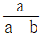
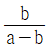
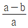
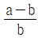
(정답률: 84%)
64. 경중률에 대한 설명으로 옳은 것은?
- 경중률은 동일 조건으로 관측했을 때 관측 횟수에 반비례한다.
- 경중률은 평균의 크기에 비례한다.
- 경중률은 관측거리에 반비례한다.
- 경중률은 표준편차의 제곱에 비례한다.
(정답률: 53%)
65. 트래버스 측량에서 측점 A의 좌표가 X=150m, Y=200m이고 측점 B까지의 측선 길이가 150m일 때 측점 B의 좌표는? (단, AB측선의 범위각은 280°15´13"이다.)
- X=176,70m Y=52.40m
- X=176,70m Y=347.60m
- X=150,72m Y=53.19m
- X=150.72m Y=4.19m
(정답률: 44%)
66. 구과량(e)에 대한 설명으로 옳은 것은?
- 평면과 구면과의 경계점
- 구면 삼각형의 내각의 합이 180°보다 큰 양
- 구면 삼각형에서 삼각형의 변장을 계산한 값
- e=F/R로 표시되는 양 (F:구면 삼각형의 면적, R:지구의 곡률 반경)
(정답률: 67%)
67. 강철줄자로 실측한 길이가 246.241m이었다. 이때 온도가 24℃라면 온도에 의한 보정량은? (단, 강철줄자의 온도 15℃를 기준으로 한 팽창계수는 0.0000117/℃이다.)
- 20.5㎜
- 25.9㎜
- 125.0㎜
- 2⑤.1㎜
(정답률: 48%)
68. 전파거리 측량기의 거리측정 원리는 변조파장으로부터 거리를 구할 수 있다. 이 때 변조파장(λ)을 구하는 식으로 옳은 것은? (단, V:보정된 전파 에너지속도, f:변조 주파수)
- f/V
- v2/f
- v/f2
- V/f
(정답률: 63%)
69. 갑, 을, 병 3사람이 기선측량을 한 결과 다음과 같은 결과를 얻었다면 최확값은?
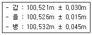
- 100.521m
- 100.524m
- 100.526m
- 100.531m
(정답률: 43%)
70. 범위가 S32°38´⑤″W일 때 이것의 역방위는?
- N32°38´⑤″E
- S57°21´55″W
- N57°21´55″E
- S32°38´⑤″E
(정답률: 60%)
71. 삼각측량에서 각관측의 오차는 sin법칙에 의한 변 길이의 정밀도에 영향을 주게 된다. 삼각망 조정을 위한 내각10°에 대한 표차는 60°에 대한 표차의 몇 배인가?
- 약5배
- 약10배
- 약15배
- 약30배
(정답률: 30%)
72. 직접수준측량을 하여 2km를 왕복하는데 오차가 ±16㎜ 이었다면 이것과 같은 정밀도로 측량하여 4.5km를 왕복 측량하였을 때에 예상되는 오차는?
- ±20㎜
- ±24㎜
- ±36㎜
- ±42㎜
(정답률: 65%)
73. 주곡선의 등고선간격을 결정할 때 고려하여야 할 사항과 거리가 먼 것은?
- 측량목적
- 도면의 축척
- 지형의 상태
- 측량거리
(정답률: 23%)
74. 정확도가 ±(3㎜+2ppm×L)로 표현되는 광파거리 측량기로 거리 500m를 측량하였을 때 예상되는 오차의 크기는?
- ±4㎜ 이하
- ±8㎜ 이하
- ±13㎜ 이하
- ±17㎜ 이하
(정답률: 44%)
75. 일반측량성과 및 일반측량기록 사본의 제출을 요구할 수 있는 경우에 해당되지 않는 것은?
- 측량의 기술 개방을 위해
- 측량의 정확도 확보를 위해
- 측량의 중복 배제를 위해
- 측량에 관한 자료의 수집분석을 위해
(정답률: 73%)
76. 측량ㆍ수로조사및지적에관한법률에서의 용어에 대한 정의로 옳지 않은 것은?
- 수로조사 : 해상교통안전, 해양의 보전ㆍ이용ㆍ개발, 해양 관할권의 확보 및 해양재해 예방을 목적으로 하는 수로측량ㆍ해양관측ㆍ항로조사 및 해양지명조사를 말한다.
- 측량기록 : 측량성과를 얻을 때까지의 측량에 관한 작업의 기록을 말한다.
- 토지의 표시 : 지적공부에 토지의 소재ㆍ지번ㆍ지목ㆍ면적ㆍ경계 또는 좌표를 등록한 것을 말한다.
- 지도 : 측량결과에 따라 공간상의 위치와 지형 및 지명등 여러 공간정보를 일정한 축척에 따라 기호나 문자들로 표시한 것으로 수치지형도와 수치주제도는 제외된다.
(정답률: 57%)
77. 측량 기술자의 자격기준 중 “기사의 자격을 취득한 사람으로서 10년 이상 측량업무를 수행한 자”가 해당되는 등급은?
- 특급기술자
- 고급기술자
- 중급기술자
- 초급기술자
(정답률: 67%)
78. 기본측량성과의 검증을 위해 검증을 의뢰받은 기본측량성과 검증기관은 몇 일 이내에 검증결과를 제출하여야 하는가?
- 10일
- 20일
- 30일
- 60일
(정답률: 82%)
79. 고의로 측량성과를 사실과 다르게 한 자에 대한 벌칙 기준은?
- 3년 이하의 징역 또는 3천만원 이하의 벌금
- 2년 이하의 징역 또는 2천만원 이하의 벌금
- 1년 이하의 징역 또는 1천만원 이하의 벌금
- 3백만원 이하의 과태료
(정답률: 42%)
80. 국토해양부장관은 측량기본계획을 몇 년마다 수립하여야 하는가?
- 3년
- 5년
- 7년
- 10년
(정답률: 85%)
A 측점의 기계고는 1m이고, B 측점의 HP는 1.5m입니다. 따라서 B 측점의 기계고는 1.5m - 0.5m = 1m입니다. (기계고와 HP의 차이는 시거리 S와 경사각 θ에 의해 결정됩니다.)
따라서 A와 B 사이의 고저차는 B 측점의 기계고 1m에서 A 측점의 기계고 1m을 뺀 값인 0m입니다.
정답은 "10.5m"이 아니라 "0m"입니다.